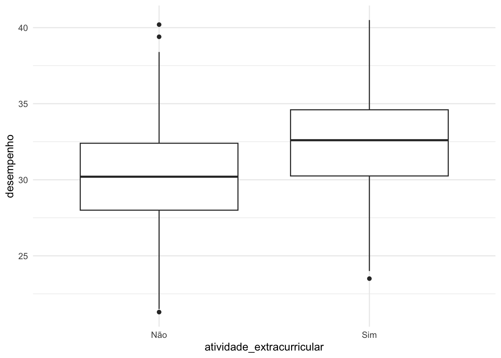
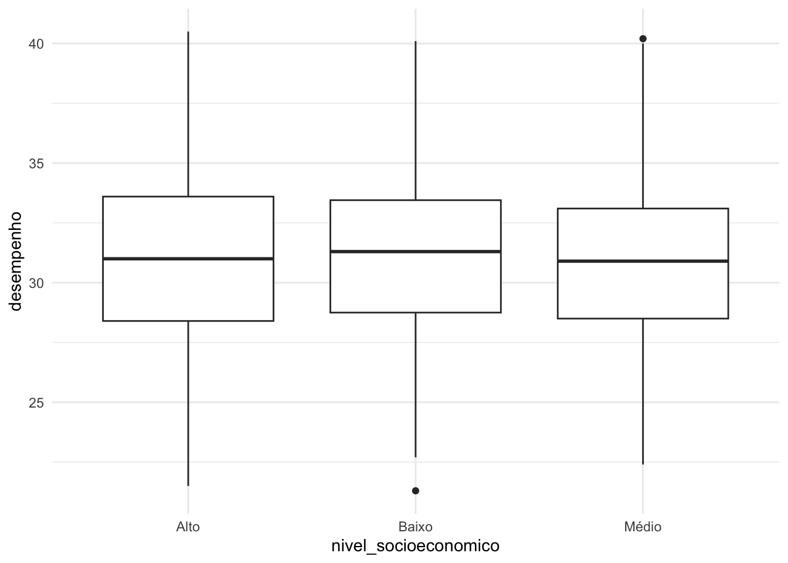

Neste projeto, será realizado uma análise estatística com o objetivo de investigar possíveis relações entre fatores, como, por exemplo, idade, horas de estudo, e como impactam o desempenho acadêmico de um estudante.
# Instala biblioteca caso necessário if (!require(readxl)) install.packages("readxl")
Loading required package: readxl
# Importando biblioteca para ler arquivo .xslx library(readr) # Lendo base de dados dados <-read_xlsx("base_de_dados.xlsx")
2. A Base de Dados
A base de dados é composta por 943 observações e 9 variáveis, cada uma representando uma característica ou comportamento relacionado ao desempenho escolar. Abaixo estão listadas as variáveis investigadas, seus significados e respectivas unidades de medida:
Idade
Tipo: Quantitativa
Descrição: Indica a idade do aluno
Unidade de medida: Anos
Horas de estudos
Tipo: Quantitativa
Descrição: Indica o tempo total de estudo de um aluno
Unidade de medida: Horas
Frequência
Tipo: Quantitativa
Descrição: Representa a frequência do aluno nas aulas
Unidade de Medida: Percentual (%)
Atividades extracurriculares
Tipo: Categórica
Descrição: Indica se o aluno participa de atividades extracurriculares
Unidade de medida: Pode ser Sim/Não
Nível socioeconômico
Tipo: Categórica
Descrição: Representa a condição econômica e social do aluno
Unidade de medida: Pode ser Alto/Médio/Baixo
Motivação
Tipo: Quantitativa
Descrição: Mede o nível de motivação do aluno em relação aos estudos
Unidade de medida: Percentual (%)
Notas anteriores
Tipo: Quantitativa
Descrição: Refere-se ao desempenho escolar (média) de um aluno em avaliações escolares
Unidade de medida: Nota numérica (de 0 a 10)
Sono
Tipo: Quantitativa
Descrição: Indica o tempo médio de sono diário de um aluno
Unidade de medida: Horas
Desempenho
Tipo: Quantitativa
Descrição: Refere-se ao desempenho escolar de um aluno
Unidade de medida: Percentual (%)
Sumário da base de dados:
if (!require(skimr)) install.packages("skimr")
Loading required package: skimr
library(skimr)skim(dados)
Data summary
Name
dados
Number of rows
943
Number of columns
9
_______________________
Column type frequency:
character
2
numeric
7
________________________
Group variables
None
Variable type: character
skim_variable
n_missing
complete_rate
min
max
empty
n_unique
whitespace
atividade_extracurricular
0
1
3
3
0
2
0
nivel_socioeconomico
0
1
4
5
0
3
0
Variable type: numeric
skim_variable
n_missing
complete_rate
mean
sd
p0
p25
p50
p75
p100
hist
idade
0
1.00
16.03
1.04
13.0
15.00
16.0
17.0
19.0
▁▅▇▅▂
horas_estudo
10
0.99
15.14
5.02
-0.2
11.70
15.2
18.6
32.0
▁▅▇▃▁
frequencia
0
1.00
87.30
7.18
75.0
81.15
87.4
93.4
100.0
▇▇▇▇▇
motivacao
0
1.00
17.03
4.42
4.5
13.90
16.9
20.1
30.3
▁▅▇▅▁
notas_anteriores
8
0.99
7.02
1.45
1.4
6.00
7.0
8.0
12.3
▁▂▇▃▁
sono
0
1.00
6.98
0.99
4.1
6.30
7.0
7.7
10.1
▁▅▇▅▁
desempenho
0
1.00
31.06
3.48
21.3
28.50
31.1
33.4
40.5
▁▅▇▅▁
2.1 Valores Ausentes
Com base na tabela de análise exploratória gerada, podemos identificar que 8 observações da base de dados não possuem a variável notas anteriores. Além disso, também podemos verificar que a variável horas de estudo não está presente em 10 observações da base de dados.
Assim sendo, é notório a necessidade de tratar as observações ausentes. Nesse contexto, uma boa estratégia para solucionar a ausência dessas observações é imputar valores como a mediana da respectiva variável nas observações em que ela está ausente pois é menos sensível a outliers.
2.1 Potenciais Outliers
Outro ponto importante observado na tabela de análise exploratória é a presença de possíveis outliers nas seguinte variávei:
Horas de estudo: O valor mínimo observado é -0.2 (a unidade de medidas horas não pode ser negativa);
Portanto, isso indica que potencialmente precisaremos tratar este caso substituindo o valor distoante observado por 0 ou removendo-o.
3. Análise Bivariada
Nesta etapa iremos realizar uma análise entre a relação as variáveis (mais especificamente entre duas). Isto é importante pois permite identificarmos como as variáveis na base de dados influem uma na outra. Portanto, essa análise busca responder perguntas como:
Será que quanto mais horas de estudos possuir maior será seu desempenho/rendimento?
Por fim, é importante destacar que esse tipo de análise depende do tipo da variável estatística. Sendo assim, realizaremos uma análise para as variáveis quantitativas e uma outra para as variáveis categóricas (ou qualitativas).
3.1 Análise Bivariada (Variáveis Numéricas)
Iniciamos a análise para as variáveis numéricas. Para fazer isso, utilizamos o seguinte código em R para gerar a matriz de correlação de tais variáveis:
if (!require(dplyr)) install.packages("dplyr")
Loading required package: dplyr
Attaching package: 'dplyr'
The following objects are masked from 'package:stats':
filter, lag
The following objects are masked from 'package:base':
intersect, setdiff, setequal, union
library(dplyr)# Filtra os dados numéricosdados_numericos <- dados %>%select_if(is.numeric)# Gera matriz de correlaçãocorr_matrix <-cor(dados_numericos, use="complete.obs")# Imprimindo matriz de correlaçãocorr_matrix
if (!require(corrplot)) install.packages("corrplot")
Loading required package: corrplot
corrplot 0.95 loaded
library(corrplot)# Plota a matriz de correlação das variáveiscorrplot(corr_matrix, method ="color", addCoef.col ="black")
A partir da matriz de correlação, podemos destacar as seguintes observações:
Existe indícios de uma correlação forte positiva (90%) entre horas de estudo e motivação. Isso implica que alunos motivados estudam mais. Além disso, a alta correlação indica que podemos simplificar o modelo de regressão linear simples pois ambas variáveis tendem a explicar de forma igual o rendimento acadêmico do aluno.
Frequência e desempenho acadêmicos possuem correlação moderada positiva (63%). Esses dados indicam que alunos que frequentam as aulas regularmente tendem a possuir um rendimento ou desempenho acadêmico melhor.
Horas de estudo e desempenho possuem correlação baixa positiva (37%). Isso indica que alunos que estudam mais, possuem um melhor desempenho acadêmico.
Desempenho e motivação correlação baixa positiva (27%). Isso indica que quanto mais motivado um aluno for, melhor será seu desempenho em suas atividades acadêmicas.
Desempenho e notas anteriores possuem correlação baixa positiva (13%). Logo, as notas de um aluno serão melhores se ele possuir um bom desempenho.
Sono e desempenho possuem correlação baixa negativa (13%). Portanto, é um indício de que alunos que dormem menos, tendem a ter um desempenho pior em seus estudos.
3.2 Análise Bivariada (Variáveis Categóricas)
Agora, partiremos para uma análise das variáveis numéricas em função das categóricas. Nesse contexto, plotaremos um gráfico boxplot que permite obter insights sobre como a variável desempenho se comporta em função de uma determinada variável categórica (i.e atividade extracurricular, etc.). Nele, podemos observar a mediana da variável categórica.
Warning in library(package, lib.loc = lib.loc, character.only = TRUE,
logical.return = TRUE, : there is no package called 'ggpplot2'
The following package(s) will be installed:
- ggplot2 [3.5.2]
These packages will be installed into "~/Projeto Estatística/renv/library/macos/R-4.4/x86_64-apple-darwin20".
# Installing packages --------------------------------------------------------
- Installing ggplot2 ... OK [linked from cache]
Successfully installed 1 package in 13 milliseconds.
# Importa biblioteca ggplot2library(ggplot2)
Primeiro, analisamos para variável categórica atividade extracurricular. Vamos ver como o desempenho se comporta em função dessa variável categórica:
# Plotando boxplot: desempenho acadêmico em função de atividade extracurricularggplot(dados, aes(x = atividade_extracurricular, y = desempenho)) +geom_boxplot() +theme_minimal()

Conclusão: Interpretando o gráfico plotado, é notório que alunos engajados em atividades extracurriculares possuem um melhor desempenho quando comparado a alunos que não participam de tais atividades. Logo, essa observação é estatisticamente evidente quando observamos a mediana dos dois boxes acima. Outro ponto importante a ser destacado é que podemos observar a presença de outliers (valores distoantes ou atípicos). Isso pode ser observado nos pontos mais extremos que ficam abaixo e acima dos boxes. Finalmente, isto indica que de fato há uma correlação entre as duas váriaveis.
Agora analisaremos o gráfico da variável categórica denominada nível socioeconômico:
# Plotando boxplot: desempenho acadêmico em função do nível socioeconômicoggplot(dados, aes(x = nivel_socioeconomico, y = desempenho)) +geom_boxplot() +theme_minimal()

Conclusão: Analisando o gráfico acima, podemos observar que diferentes níveis socioeconômicos não impactam no desempenho acadêmico de um aluno. Em outras palavras, apesar de haver uma leve diferença nas medianas dos boxplot, essa diferença é mínima ou desprezível quando analisamos estatisticamente. Além disso, assim como na análise anterior, também podemos notar a presença de outliers nesse gráfico. Por fim, podemos concluir que não há uma correlação, ou seja, que estatisticamente falando, o nível socioeconômico de um aluno não impacta em seu desempenho educacional.
4. Análise de Regressão
Nesta seção, será realizada uma análise de regressão linear múltipla com o objetivo de investigar a influência de diversas variáveis explicativas sobre a resposta desempenho. Essa abordagem permite quantificar a relação entre o desemepenho acadêmico e os demais fatores que vimos anteriormente (atividades extracurriculares, nível socioeconômico, etc.).
Nesse contexto, iremos realizar as seguintes investigações:
Diagnóstico de multicolinearidade;
Avaliar a significância estatística das variáveis no contexto do modelo;
Verificar a capacidade preditiva do modelo por meio do coeficiente de determinação (R²);
Análisar resíduos.
4.1 Análise da Significância Estatitística das Variáveis
Assim sendo, iniciaremos a análise implementando o nosso modelo e gerando um sumário estatístico. Através desse sumário, poderemos, por exemplo, avaliar a significância estatística das variáveis.
Criando o modelo de regressão linear e exibindo um sumário:
# Criando modelo de regressão linearmodelo <-lm(desempenho ~ idade + horas_estudo + frequencia + atividade_extracurricular + nivel_socioeconomico + motivacao + notas_anteriores + sono + desempenho, data = dados)
Warning in model.matrix.default(mt, mf, contrasts): the response appeared on
the right-hand side and was dropped
Warning in model.matrix.default(mt, mf, contrasts): problem with term 9 in
model.matrix: no columns are assigned
# Exibindo resultadossummary(modelo)
Call:
lm(formula = desempenho ~ idade + horas_estudo + frequencia +
atividade_extracurricular + nivel_socioeconomico + motivacao +
notas_anteriores + sono + desempenho, data = dados)
Residuals:
Min 1Q Median 3Q Max
-7.2374 -1.3748 -0.1003 1.4228 6.0523
Coefficients:
Estimate Std. Error t value Pr(>|t|)
(Intercept) 1.676967 1.442204 1.163 0.245
idade 0.035082 0.063316 0.554 0.580
horas_estudo 0.476040 0.029477 16.149 < 2e-16 ***
frequencia 0.300170 0.009151 32.803 < 2e-16 ***
atividade_extracurricularSim 2.230537 0.135026 16.519 < 2e-16 ***
nivel_socioeconomicoBaixo 0.207329 0.191807 1.081 0.280
nivel_socioeconomicoMédio 0.240386 0.174924 1.374 0.170
motivacao -0.271728 0.033495 -8.112 1.59e-15 ***
notas_anteriores 0.219761 0.045138 4.869 1.32e-06 ***
sono -0.366070 0.066055 -5.542 3.91e-08 ***
---
Signif. codes: 0 '***' 0.001 '**' 0.01 '*' 0.05 '.' 0.1 ' ' 1
Residual standard error: 1.992 on 915 degrees of freedom
(18 observations deleted due to missingness)
Multiple R-squared: 0.675, Adjusted R-squared: 0.6718
F-statistic: 211.1 on 9 and 915 DF, p-value: < 2.2e-16
Interpretação: Considerando um nível de significância de 5% (α = 0.05), os dados do modelo de regressão linear múltipla e sabendo que as variáveis que são estaticamente significativas para o modelo são aquelas com p-valor < 0.05, podemos concluir que as seguintes variáveis tem um efeito estatisticamente significativo para explicar o desempenho do aluno:
Variável
Coef. Estimado
Interpretação
horas_estudo
0.476
A cada hora de estudo, o desempenho do aluno aumenta em 47.6%.
frequencia
0.300
A cada frequência/presença do aluno nas aulas, seu desempenho aumenta em 30%.
atividade_extracurricularSim
2.230
Alunos que participam de atividades extracurriculares apresenta um desempenho 2.23 maior em relação a alunos que não participam de atividades extracurriculares.
motivacao
-0.271
Alunos que são mais motivados tendem a possuir um desempenho menor, contudo, isto é indicativo de multicolinearidade, pois em nossa análise anterior, vimos que alunos com motivação maior possuem na realidade um melhor desempenho que alunos menos motivados.
notas_anteriores
0.219
Alunos que possuem notas anteiores melhores possuem um desempenho de 21.9% melhor em relação a alunos com notas anteriores piores.
sono
-0.366
Mais sono está associado a menor desempenho. (Isso pode indicar noites mais longas de sono em vez de tempo ideal de descanso.)
Por fim, as seguintes variáveis não possuem um efeito estatisticamente significativo para explicar o desempenho do aluno (p-valor > 0.05):
Variável
p-valor
idade
0.580
nivel_socioeconomicoBaixo
0.207
nivel_socioeconomicoMedio
0.170
Observação: a variável nivel_socioeconomico é categórica. Isso significa que ela está sendo comparada a uma classe referência. No nosso caso a referência é nivel_socioeconomicoAlto . Como nenhuma das classes não possui um efeito estatisticamente significativo, podemos desconsiderá-la.
4.2 Diagnóstico de Multicolinearidade
Conforme observamos na análise da significância, o coeficiente estimado da variável motivacao resultou em um valog negativo, porém, não faz sentido, pois alunos mais motivados tendem a ter um melhor desempenho. Quando inconsistências assim ocorrem em nossa análise isso pode nos indicar que há uma multicolinearidade entre duas ou mais variáveis.
Um dos objetivos da análise de regressão é analisar de maneira isolada a relação entre a variável de interesse (no nosso caso desempenho) e as demais variáveis (idade, notas_anteriores, etc.). Nesse contexto, quando duas ou mais variáveis são altamente correlacionadas fica difícil de estimar a correlação entre as variáveis de forma independente. Este problema é chamado de multicolinearidade.
A fim de investigar se há multicolinearidade ou não em nosso modelo, utilizaremos a medida estatística conhecida como Variance Inflation Factor (VIF). A VIF começa com o valor 1 e não possuí um limite superior. De forma resumida ela funciona da seguinte maneira:
VIF = 1 Indica que não há multicolinearidade;
1 < VIF <= 5 indica que há uma correlação moderada
VIF > 5 indica que há uma forte correlação
Calculando o valor da medida estatística VIF:
if (require(car)) install.packages("car") # pacote que possui a função vif
Loading required package: car
Loading required package: carData
Attaching package: 'car'
The following object is masked from 'package:dplyr':
recode
The following package(s) will be installed:
- car [3.1-3]
These packages will be installed into "~/Projeto Estatística/renv/library/macos/R-4.4/x86_64-apple-darwin20".
# Installing packages --------------------------------------------------------
- Installing car ... OK [linked from cache]
Successfully installed 1 package in 8.6 milliseconds.
library(car)# Imprimindo medida estatística vif para o nosso modelovif(modelo)
Warning in model.matrix.default(mod, data = structure(list(desempenho = c(29.7,
: the response appeared on the right-hand side and was dropped
Warning in model.matrix.default(mod, data = structure(list(desempenho = c(29.7,
: problem with term 9 in model.matrix: no columns are assigned
Portanto, há um forte indício de multicolinearidade entre as duas variáveis, ou seja, elas são altamente correlacionados.
5. Seleção do Modelo
Feito a análise bivariada, análise de regressão e diagnóstico de multicolinearidade do modelo, nesta etapa iremos realizar a seleção do modelo utilizando os resultados observáveis nas análises anteriores para decidir quais variáveis utilizar, etc. No final desta etapa, o objetivo é termos um modelo de regressão linear múltipla mais simples e adequado para o nosso propósito.
Iniciaremos nossa seleção atulizando o modelo com o objetivo de retirar as variáveis não significativas. Após isso, utilizaremos medidas estatísticas para comparar os modelos e selecionar o mais adequado.
Segue o sumário do modelo inicial para referência das variáveis significativas e não significativas:
summary(modelo)
Call:
lm(formula = desempenho ~ idade + horas_estudo + frequencia +
atividade_extracurricular + nivel_socioeconomico + motivacao +
notas_anteriores + sono + desempenho, data = dados)
Residuals:
Min 1Q Median 3Q Max
-7.2374 -1.3748 -0.1003 1.4228 6.0523
Coefficients:
Estimate Std. Error t value Pr(>|t|)
(Intercept) 1.676967 1.442204 1.163 0.245
idade 0.035082 0.063316 0.554 0.580
horas_estudo 0.476040 0.029477 16.149 < 2e-16 ***
frequencia 0.300170 0.009151 32.803 < 2e-16 ***
atividade_extracurricularSim 2.230537 0.135026 16.519 < 2e-16 ***
nivel_socioeconomicoBaixo 0.207329 0.191807 1.081 0.280
nivel_socioeconomicoMédio 0.240386 0.174924 1.374 0.170
motivacao -0.271728 0.033495 -8.112 1.59e-15 ***
notas_anteriores 0.219761 0.045138 4.869 1.32e-06 ***
sono -0.366070 0.066055 -5.542 3.91e-08 ***
---
Signif. codes: 0 '***' 0.001 '**' 0.01 '*' 0.05 '.' 0.1 ' ' 1
Residual standard error: 1.992 on 915 degrees of freedom
(18 observations deleted due to missingness)
Multiple R-squared: 0.675, Adjusted R-squared: 0.6718
F-statistic: 211.1 on 9 and 915 DF, p-value: < 2.2e-16
5.1 Remoção das Variáveis Não Significativas
Primeiramente, removeremos as variáveis não significativas idade e nivel_socioeconomico :
Warning in model.matrix.default(mt, mf, contrasts): the response appeared on
the right-hand side and was dropped
Warning in model.matrix.default(mt, mf, contrasts): problem with term 7 in
model.matrix: no columns are assigned
# Sumario do modelo simplificadosummary(modelo_simplificado)
Call:
lm(formula = desempenho ~ horas_estudo + frequencia + atividade_extracurricular +
motivacao + notas_anteriores + sono + desempenho, data = dados)
Residuals:
Min 1Q Median 3Q Max
-7.1448 -1.4077 -0.0889 1.4418 6.0996
Coefficients:
Estimate Std. Error t value Pr(>|t|)
(Intercept) 2.416665 1.002754 2.410 0.0161 *
horas_estudo 0.474304 0.029422 16.121 < 2e-16 ***
frequencia 0.300280 0.009138 32.862 < 2e-16 ***
atividade_extracurricularSim 2.222924 0.134679 16.505 < 2e-16 ***
motivacao -0.270154 0.033451 -8.076 2.09e-15 ***
notas_anteriores 0.220588 0.045102 4.891 1.19e-06 ***
sono -0.366958 0.065913 -5.567 3.40e-08 ***
---
Signif. codes: 0 '***' 0.001 '**' 0.01 '*' 0.05 '.' 0.1 ' ' 1
Residual standard error: 1.992 on 918 degrees of freedom
(18 observations deleted due to missingness)
Multiple R-squared: 0.6742, Adjusted R-squared: 0.672
F-statistic: 316.6 on 6 and 918 DF, p-value: < 2.2e-16
Comparando AIC do modelo_simplificado e do modelo completo:
AIC(modelo)
[1] 3912.297
AIC(modelo_simplificado) # sem idade e nivel socioeconomico
[1] 3908.553
Nota-se que o modelo_completo possui um AIC menor que o modelo inicial. Outra medida que podemos utilizar para comparar é a Critério de Informação Bayesiano (BIC). O modelo que apresentar a menor BIC são preferidos, pois apresentam melhor ajuste aos dados com número menor de parâmetros.
Comparando BIC do modelo_simplificado e do modelo completo:
BIC(modelo)
[1] 3965.425
BIC(modelo_simplificado)
[1] 3947.192
Isso confirma que o modelo_simplificado está mais ajustado e adequado para nossos propósitos.
5.2 Motivação ou Horas de Estudo? Resolvendo O Grande Elefante Branco na Sala: Multicolinearidade
Finalmente, é hora de resolvermos a multicolinearidade. Para resolver este problema, utilizaremos a mesma abordagem acima. Atualizaremos o modelo manualmente e, através dos critérios estatísticos AIC e BIC, escolheremos a variável que mais ajuda a explicar o desempenho do estudante. Para isso, precisamos relembrar que as variáveis causadoras desse problema são: motivacao e horas_estudo .
Warning in model.matrix.default(mt, mf, contrasts): the response appeared on
the right-hand side and was dropped
Warning in model.matrix.default(mt, mf, contrasts): problem with term 6 in
model.matrix: no columns are assigned
summary(modelo_sem_horas_estudo)
Call:
lm(formula = desempenho ~ frequencia + atividade_extracurricular +
motivacao + notas_anteriores + sono + desempenho, data = dados)
Residuals:
Min 1Q Median 3Q Max
-6.4150 -1.4878 -0.0289 1.4296 6.7518
Coefficients:
Estimate Std. Error t value Pr(>|t|)
(Intercept) 2.35316 1.12327 2.095 0.036447 *
frequencia 0.29731 0.01027 28.947 < 2e-16 ***
atividade_extracurricularSim 2.16381 0.15126 14.305 < 2e-16 ***
motivacao 0.21151 0.01666 12.693 < 2e-16 ***
notas_anteriores 0.18894 0.05086 3.715 0.000216 ***
sono -0.43250 0.07405 -5.841 7.19e-09 ***
---
Signif. codes: 0 '***' 0.001 '**' 0.01 '*' 0.05 '.' 0.1 ' ' 1
Residual standard error: 2.252 on 929 degrees of freedom
(8 observations deleted due to missingness)
Multiple R-squared: 0.5813, Adjusted R-squared: 0.5791
F-statistic: 258 on 5 and 929 DF, p-value: < 2.2e-16
Comparando os dois modelos com as medidas AIC e BIC:
AIC(modelo_sem_motivacao)
[1] 3970.044
AIC(modelo_sem_horas_estudo)
[1] 4179.175
BIC(modelo_sem_motivacao)
[1] 4003.853
BIC(modelo_sem_horas_estudo)
[1] 4213.059
Nota-se, através da análise realizada, que o modelo mais adequado e ajustado é aquele sem a variável motivacao e com a variável horas_estudo., ou seja, o modelo_sem_motivacao.